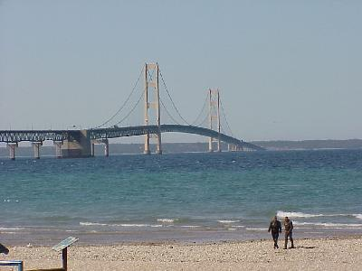
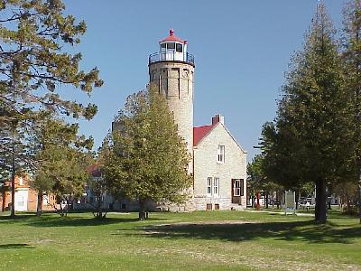
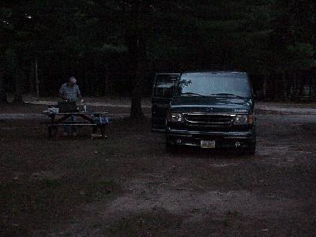

May 15, 141 miles
| Packed and traveling, at last. We left the Youngstown area this morning, at 141 miles (Don started at his house I joined the trip at mileage 141) and traveled up thru Toledo, Ann Arbor, Flint, Mackinaw, Sault Ste. Marie, and into Canada. On our way we had planned to stop by some friends' house in Michigan, but alas, they were not home (we had tried to call before we left, but my sister gave us a bum number). | |
| We didn't make too many stops on our first day, but we did stop to see the Mackinaw Bridge. The bridge is 42 years old, and the longest suspension bridge in the United States. |  |
| On the park at the Mackinaw Bridge is also the Mackinaw Light House. The Light House is no longer manned, and the steam powered fog horn has been put out of business by automatic fog horns on the bridge. |  |
On this first day of travel we made it 581 miles, maybe some 20 miles of that being driven on a slight detour, where we took a wrong turn just inside Canada. We stopped about 30 miles into Canada, for our first night of camping in the van, at Pancake Campgrounds. This early in the season, we were one of only 2 or 3 groups, so the night was nice and quiet, other than the huge mosquitos that also lived at the camp grounds. |
 Yes - the picture is dark - it was 9:00 PM |
| Since we did
not arrive until about 9:00, we didn't do too much other
than get settled in, grab a bite to eat and go to sleep. Other highlights of the day included seeing two groups of turkeys. Type [Alt][R] or hit your back button to return to the Calendar. |
|